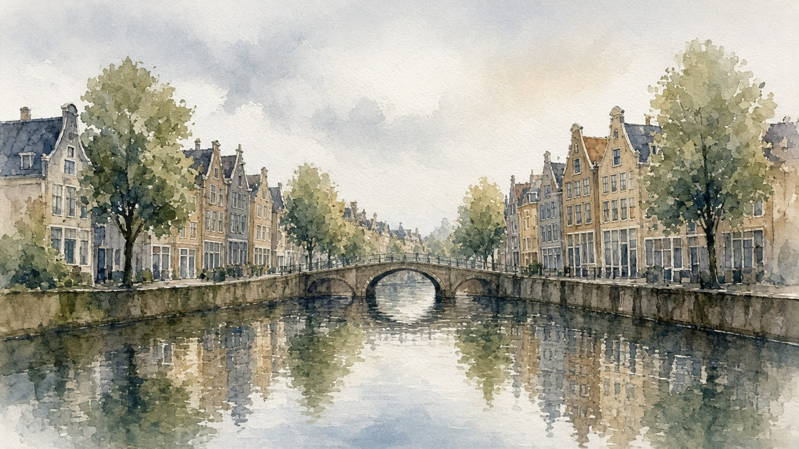

Lobsyhoger onderwijs
Lobsyhoger onderwijsHbo Verpleegkunde · jaar 3K7R-M2D
Lobsyhoger onderwijs
Werkstijl is afgerond. In dit onderdeel gaat het over wat je motiveert: welke taken je energie geven en waar je juist moe van wordt.
 Werkstijl
Werkstijl Drijfveren
Drijfveren Pauze
Pauze Waarden
Waarden Werkomgeving
WerkomgevingStelling 21 van 80 · 20 stellingen in dit onderdeel